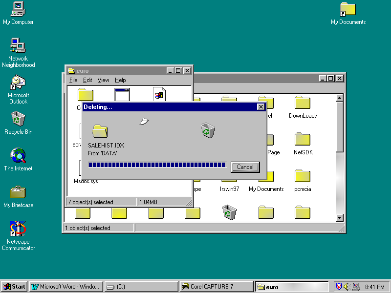

| O sistema operativo Windows98 tornou o trabalho numa tarefa mais produtiva. Permite aceder fácilmente a World Wide Web (Internet) a partir de qualquer componente do Windows. As melhorias no ambiente de trabalho, da barra de ferramentas e do menu Iniciar permitem uma maior facilidade na abertura dos programas e dos atalhos. Por outro lado existe a possibilidade de trabalhar de uma forma mais eficiente e produtiva, ao mesmo tempo foi introduzida facilidades que tornam o Windows 98 a versão mais personalizável de sempre. | |
| Indíce | |
| O ambiente de
trabalho do Windows 98* Aspectos genéricos sobre o Windows 98* Onde Localizar Informações* Tutorial Online* Ajuda do Windows* Documentos Leia-me* Recursos na Web* Uma Primeira abordagem ao Windows98* Ambiente de Trabalho* O botão Iniciar e a barra de tarefas* Operações genéricas sobre ícones, janelas e menus.* Estrutura e manipulação de janelas* O Sistema de Ajuda* Procurar e abrir programas* O menu "Programas" e os seus submenus* |
O "Explorador" do Windows* O Utilitário "Localizar"* As janelas das pastas e as operações com os seus elementos* Criar pastas ou directorias* Apagar e recuperar pastas e ficheiros* Seleccionar, copiar e mover pastas ou ficheiros* Copiar e Mover* Criar um atalho para aceder mais rapidamente a um elemento* Copiar e formatar disquetes* Instalar programas no ambiente de trabalho* Trabalhar com várias aplicações e transferência de informação* Instalar impressoras e imprimir documentos* Personalização do ambiente de trabalho* |
O ambiente de trabalho do Windows 98
Aspectos genéricos sobre o Windows 98
O Windows98 funciona como um sistema operativo, sendo ele o responsável arranque do computador. Assim, quando um computador tem o Windows98 instalado, esse computador entra directamente no ambiente de trabalho do Windows (ao contrário do que acontecia com as versões anteriores do Windows e o Ms-Dos).
Para além de se pretender afirmar como um novo sistema operativo, o Windows98 apresenta algumas concepções inovadoras, relativamente ao conjunto MS-DOS/Windows, entre as quais podemos destacar:
O Windows98 vem com tutorial interactivo incorporado, sendo bastante útil para descobrir as características do Windows98.
O tutorial pode ser aberto indo ao menu Iniciar/Start e clicando em Executar/Run, aparecendo de seguida a caixa de Executar/Run
Para se aceder ao tutorial de deve-se escrever tour98 e click em OK.
Ajuda do windows á principal fonte de informações sobre o Windows98. Estando sempre acessivel através do Menu Iniciar/Start, opção Ajuda/Help.
Os separadores ajudam a pesquisar a informação de diferentes formas, o separador Indice/Contents permite localizar tópicos, o separador Indice Remissivo/Index permite procurar por palavras chave e o separador Procurar/Search permite procurar ajuda por uma string de texto.
Contêm informações que não estavam disponiveis a quando a elaboração da ajuda do Windows e do Tutorial.
| www.microsoft.com/portugal/suporte |
Suporte técnico ao Windows98 |
| www.microsoft.com/portugal/windows98 |
Informações acerca do Windows98 |
| www.microsoft.com/hwtest/hc1 |
Lista de Hardware compativel com Windows98 |
| www.windows98.com |
Site não oficial do Windows98 com bastantes truques e dicas para o 98. |
Uma Primeira abordagem ao Windows98
O ambiente de trabalho do Windows98 é bastante fácil de utilizar, o ambiente de trabalho é a área de trabalho que aparece no ecrã após o arranque do Windows98.
É possivel abrir programas, copiar ficheiros, ligar á internet, ler mensagens de correio electrónico, eleminar documentos, alternar entre aplicações, etc…
As maiores diferenças em relação ao Windows95, são as seguintes:
O ambiente de trabalho é o primeiro ecrã que aparece quando se arranca com o windows 98. Podemos pensar no ambiente de trabalho como sendo uma área de trabalho personalizada
No lado esquerdo do ecrã, surgem normalmente os seguintes ícones:
A barra ao fundo do ecrã., conhecida como "Barra de tarefas" ("Task bar"), contém, no começo, apenas o botão "Iniciar" ("Start") e um indicador da hora do sistema.
Cada ícone representa um objecto, tal como uma pasta ou um programa. Dependendo da forma como o computador está estruturado os ícones poderão ser diferentes dos apresentados na figura.
O botão Iniciar e a barra de tarefas
Um clique sobre o botão "iniciar" faz abrir um menu com uma série de itens, alguns dos quais abrem programas ou utilitários do sistema e outros abrem para outros menus ou submenus, e assim sucessivamente.
Uma simples passagem do rato sobre um item do menu "Iniciar" faz abrir o respectivo submenu, caso exista.
Desta forma, é muito fácil e rápido chegar ao programa, documento que ele se encontre instalado nessa estrutura de menus e submenus.
Começando de baixo para cima, o menu "Iniciar" apresenta-nos os seguintes itens:
Operações genéricas sobre ícones, janelas e menus.
No Windows 98, a manipulação de ícones, janelas, menus e outros elementos do ambiente de trabalho segue muitas das técnicas já habituais nas versões anteriores do Windows, nomeadamente:
No Windows 98 passou a dar-se mais utilização ao botão secundário do rato.
Um clique com o botão secundário sobre um elemento faz abrir um menu de acesso rápido ("quick menu") específico desse elemento. Com um menu desses podem efectuar-se diversas operações (variáveis consoante o tipo de elemento em causa), tais como: abrir, mudar o nome, aceder ao quadro de "propriedades", etc.
Cada programa, utilitário ou janela que se abre no ambiente de trabalho passa a ter um botão próprio na da barra de tarefas.
Estes botões da barra de tarefas servem para passar de uma tarefa para outra, através de um simples clique do rato.
Estrutura e manipulação de janelas
Uma janela do Windows95 tem, normalmente, uma estrutura (conjunto de elementos) semelhante à que se pode ver na figura, que diz respeito ao ícone "O Meu Computador" ("My Computer").
O conjunto de três botões que se encontram no lado direito da barra de título de uma janela destinam-se a efectuar três operações muito frequentes com as janelas:
Botão minimizar – minimizar a janela, ou seja, reduz essa janela a um botão na barra de tarefas, de onde pode voltar a ser reaberta.
Botão maximizar - maximizar a janela, ou seja, aumentar a janela para a área total do ecrã.
Botão de fechar – fecha a janela.
Nota: quando uma janela se encontra maximizada, ocupando a totalidade do ecrã, o seu botão de maximizar assume um formato e uma função diferentes – muda para botão de restaurar, ou seja, permite recolocar a janela no tamanho anterior.
A operação de minimizar uma janela tem um efeito diferente de fechar essa mesma janela:
Para mover uma janela na área de trabalho utilizando o rato, clica-se sobre a barra de título da janela e, mantendo o botão pressionado, arrasta-se para o local pretendido.
Para aumentar ou diminuir o tamanho de uma janela, posiciona-se o ponteiro do rato sobre uma das linhas limítrofes da janela, ou um dos seus cantos, utiliza-se a técnica de clicar e arrastar, para um lado ou para o outro, conforme o tamanho que se pretende dar à janela.
Em geral, cada janela aberta apresenta um pequeno ícone no canto superior esquerdo, o qual funciona como um botão de controlo dessa janela, permitindo efectuar diversas operações:
Explorar o sistema de ajuda do Windows95 é, sem dúvida, uma boa forma de ficar a conhecer melhor a estrutura do ambiente Windows e o modo de funcionar com ele.
O acesso ao sistema de ajuda ode fazer-se a partir do menu "Iniciar", mas também através de uma qualquer janela do Windows que contenha um menu com o nome de Ajuda"("Help") ou o ponto de interrogação (?).
Como sistema operativo e ambiente de trabalho, o Windows destina-se, fundamentalmente, a proporcionar ao utilizador um interface com os recursos do sistema e a permitir trabalhar com programas de aplicação.
Como já vimos , o Windows95 proporciona diversas maneiras de encontrar um programa e pô-lo a correr no ambiente de trabalho. No Windows95, temos diversas vias para procurar programas ou documentos.
Através do menu "Iniciar", dispomos de várias opções:
Através da abertura da janela "O Meu Computador", podemos abrir outras janelas relativas às directorias ou pastas (folders) da unidade de disco em que estivermos a trabalhar, até que cheguemos à pasta que contiver o programa ou documento que nos interessar.
O menu "Programas" e os seus submenus
O menu "Programas" contém alguns programas e agrupamentos de programas que fazem parte integrante do Windows95, bem como, eventualmente, outros programas ou agrupamentos que tenham sido instalados posteriormente no ambiente de trabalho.
Por exemplo, no habitual agrupamento "Acessórios" temos, entre outros:
Para além do agrupamento "Acessórios", o menu "Programas" pode conter outros agrupamentos de programas que tiverem sido instalados, bem como o "Explorado do Windows" ("Windows Explorer") e o item "Linha de Comandos do MS-DOS" (" MS-DOS Prompt").
Este último permite aceder aos comandos do MS-DOS e a carregar programas feitos para corres naquele sistema operativo.
Depois de ter entrado no MS-DOS, para regressar ao ambiente Windows, escreve-se acontecia com as anteriores versões do Windows).
O utilitário de pesquisa "Explorador" é acedido a partir do menu "Programas".
A janela do "Explorador" – que se intitula " A Explorar…" – mostra-nos a estrutura de directorias ou pastas e ficheiros e permite-nos explorar ou percorrer essa estrutura.
No lado esquerdo da janela "A Explorar…", temos uma secção intitulada "Todas as pastas" ("All Folders"), que nos apresenta a estrutura de unidades (drives) e directorias (folders) do nosso sistema, sob a forma de um diagrama de árvore no lado direito da mesma janela, são apresentadas a pastas (subdirectorias) e os ficheiros que se encontram dentro da pasta ou directoria que estiver seleccionada do lado esquerdo.
Para visualizar o conteúdo de uma pasta ou directoria, basta clicar sobre o seu ícone.
À esquerda de algumas pastas ou folders, podem ver-se pequenos quadrados com um sinal mais(+) ou menos(-). Clicando sobre este sinal, pode expandir-se ou retrair-se a estrutura de directorias da pasta a que se diz respeito.
Quando uma pasta apresenta um sinal de mais (+), isso quer dizer que existem mais directorias ou pastas dentro dessa pasta.
Quando uma pasta não apresenta nenhum sinal, então é porque não contém dentro de si mais nenhuma pasta ou directoria.
O Windows95 oferece um outro utilitário de pesquisa de pastas e ficheiros chamado "Localizar" ("Find"), que pode ser acedido:
As janelas das pastas e as operações com os seus elementos
Na janela "O Meu Computador" vamos encontrar ícones relativos às unidades (drives) do nosso computador (A; B; ; etc.).
Fazendo um duplo clique sobre um desses ícones, por exemplo, o ícone relativo ao disco (C:), será aberta uma nova janela contendo as directorias raiz desse disco.
Para abrir uma nova janela relativa a uma pasta ou directoria, basta fazer um duplo clique sobre esse elemento.
Cada janela aberta, apresenta-nos, para além do seu conteúdo de ficheiros e outras directorias ou pastas, uma barra de menus e uma barra de ferramentas.
Nota: caso a barra de ferramentas não se encontre visível, pode pedir-se no menu "Ver" ("View") a opção "Barra de Ferramentas". ("Toolbars").A barra de ferramentas contém, no seu lado esquerdo, dois botões para recuar e avançar, comportando-se desta forma da mesma maneira do que um Browser. Na barra de "Endereço" ("Address") pode-se clicar para abrir uma lista de opções a que temos acesso no computador.
Assim, seleccionando uma outra unidade ou pasta diferente daquele em que nos encontramos (por exemplo, a drive de disquetes A:) , passamos a visualizar os respectivos ficheiros e directorias ou pastas.
Através da barra de ferramentas, podemos efectuar diversas operações com ficheiros e folders ou pastas, tais como (seguindo a ordem dos ícones, da esquerda para a direita):
No menu "Ficheiro" podemos efectuar as seguintes operações:
No menu "Editar" podemos efectuar as seguintes operações:
Nota: uma forma de aceder aos modos de visualização dos ícones das pastas e ficheiros é fazer um clique com o botão secundário (direito) do rato na área dos ícones, o que abre um menu rápido, com vários comandos, entre os quais alguns relacionados com os ícones.
Para criar uma nova pasta (folder) ou directoria:
Com isto, surgirá, de imediato, um novo ícone de pasta com o nome "Nova Pasta"("New Folder").
Se quisermos atribuir um nome diferente à pasta recém-criada, basta digitar, de imediato, o nome pretendido.
Em qualquer outra ocasião, para alterar um nome de uma pasta ou ficheiro, pode utilizar-se o comando "Mudar o Nome" do menu "Ficheiro" ou o menu "Propriedades".
Se abrirmos uma pasta recém-criada, como é óbvio, ela encontra-se vazia.
Como iremos ver nos próximos pontos, podemos copiar ou mover para qualquer directoria ou pasta, ficheiros e pastas provenientes de qualquer outro local do nosso sistema.
Apagar e recuperar pastas e ficheiros
Numa janela que contenha pastas e/ou ficheiros (como, por exemplo, as janelas "O Meu Computador" ou "Explorar…"), podemos apagar qualquer elemento ou conjunto deles.
Para apagar um elemento (ficheiro ou pasta), basta seleccioná-lo com o rato e optar por uma das seguintes alternativas:
Pode apagar-se um conjunto de ficheiros e/ou pastas de uma só vez.

Para tal, é necessário seleccionar esse conjunto de elementos e, em seguida, pedir para apagar com qualquer uma das alternativas acima referidas.
Para seleccionar um conjunto de elementos:
Embora o Windows peça sempre uma confirmação antes de efectuar a operação de apagar qualquer elemento, podemos cair na situação de necessitar de recuperar um elemento apagado.
Para recuperar elementos apagados, o Windows95 apresenta as seguintes opções:
Um duplo clique sobre o ícone "Reciclagem" faz abrir a respectiva janela, com uma estrutura semelhante a qualquer outra janela.
Na listagem do conteúdo desta janela aparecerão, em princípio, os ficheiros ou pastas que tiverem sido apagados.
Para recuperar um elemento apagado:
Para apagar definitivos um elementos, utiliza-se o quadro de "Reciclagem", selecciona-se esse elemento e pede-se para eliminar – com a tecla "Delete", ícone X da barra de ferramentas ou comando "Eliminar" (menu "Ficheiro").
Pode esvaziar-se totalmente o "caixote do lixo" ou espaço de reciclagem com o comando "Esvaziar Reciclagem" do menu "Ficheiro".
Seleccionar, copiar e mover pastas ou ficheiros
Para copiar ou mover pastas ou ficheiros entre diferentes folders (directorias ou unidades), devemos começar por seleccionar o elemento ou conjunto de elementos visados e, em seguida, aplicar uma entre as diversas técnicas disponíveis.
Seleccionar
Para seleccionar um único elemento, pasta ou ficheiro, basta fazer sobre ele um só clique.
Para seleccionar todos os elementos de uma pasta ou directoria, incluindo subpastas ou subdirectorias, pode pedir-se, no menu "Editar", o comando "Seleccionar Tudo" ou, simplesmente, teclar "Crtl"+A.
Para seleccionar diversos ficheiros dispersos, mantém-se pressionada a tecla "Ctrl" e clica-se sobre os elementos a seleccionar, um por um.
Para seleccionar um conjunto de ficheiros contíguos, clica-se no primeiro elemento a seleccionar, pressiona-se e mantém-se pressionada a tecla "Shift" e, por fim, clica-se no último elemento da série.
Nota: para agrupar um conjunto de ficheiros de um mesmo tipo (por exemplo, com a mesma extensão TXT ou DOC), podemos pedir no menu "Ver", a opção "Dispor ícones – por "Nome". Também é possível dispô-los por tamanho ou por data.

a1) para mover uma pasta ou ficheiro (ou conjunto seleccionado) de uma janela para outra, basta clicar sobre o elemento em questão e arrastá-lo (com o botão do rato pressionado) até à janela de destino (onde se levanta o botão do rato);
a2) para copiar, utiliza-se a mesma técnica descrita para mover, mas, ao mesmo tempo, pressiona-se e mantém-se pressionada a tecla "Ctrl";
b1) para mover uma pasta ou ficheiro (ou conjunto seleccionado) de um local para outro com o "Explorador", clica-se no elemento a mover e arrasta-se (mantendo o botão do rato pressionado) até que o ícone do elemento a mover se sobreponha ao ícone da pasta de destino (no diagrama de pastas do lado esquerdo da janela).
b2) para copiar com o "Explorador", utiliza-se a mesma técnica descrita para mover, mas pressiona-se e mantém-se pressionada a tecla "Ctrl".
Para copiar ou mover através desta técnica, temos de começar, como em qualquer caso, por seleccionar o elemento ou conjunto de elementos a que pretendemos aplicar essa operação.
Para mover, pedimos o comando "Cortar" (menu "Editar" ou menu rápido) ou tecla "Ctrl"+ X.
Para copiar, pedimos o comando "Copiar" (menu "Editar" ou menu rápido) ou teclamos "Ctrl"+C.
Em seguida, abrimos o local de destino (da cópia ou da movimentação) – a janela da pasta ou directoria onde pretendemos inserir o elemento ou conjunto de elementos em causa. Uma vez no local de destino, pedimos o comando "Colar" (menu "Editar" ou menu rápido) ou teclamos "Ctrl" + V.
Para efectuar uma cópia de uma unidade para outra, por exemplo de um disco para uma disquete, também podemos utilizar o comando "Enviar para" – que se encontra no menu "Ficheiro ou no menu rápido (aberto com o botão direito do rato sobre o elemento seleccionado).
Criar um atalho para aceder mais rapidamente a um elemento
Uma facilidade interessante do Windows95 consiste em podermos criar um atalho para aceder de uma forma mais rápida a um qualquer elemento do nosso ambiente de trabalho, como, por exemplo, um programa que utilizamos frequentemente ou um determinado documento.
Para criar um atalho para um elemento, podemos utilizar uma das seguintes vias:
Como qualquer um dos processos anteriores é criado um ícone com o nome "Atalho para…", seguido do nome do elemento (ficheiro ou pasta) que tiver sido seleccionado para o efeito.
Propriedades dos objectos
Qualquer elemento do ambiente de trabalho – desde a própria área de trabalho ("Desktop") e a barra de tarefas, até aos ficheiros, pastas e atalhos – tudo é considerado objecto e, como tal, detentor de propriedades.
Para aceder ao quadro das propriedades relativas a um qualquer objecto, basta posicionar o ponteiro do rato sobre ele e clicar no botão secundário. Como já vimos, isto faz abrir um menu rápido (quick menu) que, sempre que for caso disso, tem um item que se chama "Propriedades".O quadro de propriedades de um ficheiro ou de uma pasta apresenta-nos uma secção "Geral", onde são fornecidas informações acerca desse elemento e onde podem ser alterados os seus atributos:
Outros elementos em relação aos quais poderá ter interesse consultar o quadro de propriedades são, por exemplo:
Cada um destes elementos apresenta um quadro de propriedades específico que, para além de fornecer informações com interesse, permite efectuar operações úteis para a configuração do ambiente de trabalho (como veremos nos últimos pontos deste manual).
Para copiar ou formatar disquetes no Windows98, devemos proceder da seguinte forma:A operação de copiar uma disquete para outra apenas necessita que se coloque a disquete de origem na Drive A e que se clique no botão "Iniciar" do quadro "Copiar disco".
Após a leitura da disquete de origem, o sistema pedirá a introdução da disquete de destino na respectiva drive.
No quadro específico de "Formatar" temos diversas opções.
Quanto à capacidade, poderemos ter de escolher entre 1,44 Mb e 720 Kb, consoante a disquete for de alta ou de baixa densidade.
Quanto ao tipo de formação, temos:
Instalar programas no ambiente de trabalho
Para instalar um novo programa no Windows98, a partir de disquetes ou de um CD, temos de começar por correr o ficheiro de instalação desse programa e, para isso, temos duas opções:
Por exemplo:
A:\SETUP
Ou
D:\Setup
Na janela do "Painel de Controlo" encontra-se um ícone com o título "Adicionar/Remover programas". Fazendo um duplo clique sobre este ícone, abre-se um quadro intitulado "Propriedades de Adicionar/Remover Programas".
O botão "Instalar" dá início às operações de instalação de um novo programa. Também neste caso, se não se souber o nome do ficheiro de instalação, pode recorrer-se ao habitual botão "Procurar", para localizar o ficheiro na estrutura de drives e directorias do sistema.
Trabalhar com várias aplicações e transferência de informação
No Windows98 podemos abrir e trabalhar com diversos programas ao mesmo tempo numa sessão de trabalho. Em cada momento, apenas um desses programas está activo, enquanto os outros que tenham sido abertos são remetidos para segundo plano.
Como vimos, logo no início deste manual sobre o Windows95, cada programa que é aberto é registado na barra de tarefas e aí permanece até que seja fechado.
Se abrirmos um novo programa sem fechar o anterior, este último permanecerá não apenas com o indicativo na barra de tarefas, mas também com a sua própria janela aberta na área de trabalho, em segundo plano.
Se minimizarmos uma janela (um clique no botão de minimizar), ela desaparece da área de trabalho, mas permanece em segundo plano (ou stand by) e está disponível através da barra de tarefas.
Desta forma, cada programa aberto e remetido para segundo plano pode voltar a ser chamado com um simples clique no seu botão na barra de tarefas.
Transferência de informação
O Windows98, tal como as anteriores versões do Windows, permite a transferência de informação de um local para outro (seja dentro de um mesmo documento, seja entre documentos ou aplicações diferentes). Estas operações de transferência de informação efectuam-se através das técnicas de "cortar/copiar e colar" ("cut/copy and paste"), as quais se servem de um recurso do sistema usualmente conhecido como "Clipboard" ou "Área de Transferência".
Vamos mostrar como isto se processa, com uma exemplificação de transferência de um desenho de um documento do Paint para um documento do WordPad.
O Paint e o WordPad são, como já vimos, programas que são instalados com o próprio ambiente e encontram-se no agrupamento de programas chamado "Acessórios". Comecemos por abrir esses dois programas.
Podemos alternar facilmente entre cada um dos programas clicando ora num ora no outro dos respectivos botões.
No WordPad, escrevemos algumas pequenas frases, separadas por algumas linhas de espaço em branco entre elas.
Com as ferramentas de desenho do Paint, fazemos um pequeno desenho (por exemplo, um rectângulo e um triângulo ou uma circunferência).
Em seguida, pede-se o comando "Copiar", no menu "Editar" ou no menu rápido (aberto com um clique no botão direito do rato), ou ainda teclando "Ctrl"+C.
Para concretizar a cópia ou transferência do desenho do Paint para o documento do WordPad, abre-se este programa, escolhe-se o local onde inserir o referido desenho e pede-se o comando "Colar", no menu "Editar" ou no menu rápido.
Instalar impressoras e imprimir documentos
Quando se pretende imprimir um documento, para além de ser necessário ter uma impressora ligada ao computador, é necessário também que o sistema saiba reconhecer e comunicar com esse dispositivo e output.
Para tal, é necessário ter instalado o driver impressora que se vai utilizar. À instalação deste driver de impressora no ambiente Windows costuma chamar-se "Instalação da Impressora".
Para instalarmos um driver de impressora, temos de aceder ao "Painel de Controlo" através do menu "Iniciar", item "Definições".
Na janela "Painel de Controlo", fazemos um duplo clique sobre o ícone "Impressora" para abrir a respectiva janela.
Na janela das impressoras temos um ícone intitulado "Adicionar Impressora".
Eventualmente, podemos ter outros ícones, no caso de já termos alguma(s) impressora(s) instalada(s).
Um duplo clique sobre o ícone "Adicionar impressora" faz abrir um quadro intitulado "assistente Adicionar Impressora", o qual nos acompanha na operação de instalar o driver da impressora.
Para passar à etapa seguinte no assistente de instalação da impressora, clica-se no botão "Seguinte".
No segundo quadro, é apresentada uma lista de marcas e modelos de impressoras. Se a impressora que pretendemos instalar não aparecer na listagem do "assistente", e se tivermos a sua disquete de instalação, clicamos no botão "Disco", para que possa ser feita a leitura do respectivo driver.
No passo seguinte, é pedido para indicarmos a porta de ligação da impressora, que, normalmente é LPT1.
Quando tudo estiver definido para a instalação do driver da impressora, é provável que o "assistente" peça a disquete ou o CD de instalação do Windows, para fazer a leitura do software necessário à instalação.
Quando a instalação ficar concluída, aparecerá na janela "Impressora" um novo ícone relativo à impressora instalada.
Cada ícone de impressora instalada abre um quadro específico dessa impressora, onde podem controlar-se algumas operações, como parar temporariamente a impressão ou cancelá-la.
Se tivermos mais do que uma impressora instalada (a nível de drivers), devemos indicar qual delas queremos utilizar para imprimir. Tal indicação pode fazer-se de duas maneiras:
Também pode ser criado um atalho da impressora para a área de trabalho.
Ao pedir para criar um atalho sobre o ícone da impressora pretendida, o programa perguntará se pretendemos colocar esse atalho no ambiente de trabalho.
Imprimir documentos
Normalmente, os programas onde se reproduzem documentos dispõem de diversas alternativas para mandar imprimir esses documentos.
Habitualmente, no menu "Ficheiro" (ou "File") de cada programa de aplicação, existe um comando com o nome "Imprimir" (ou "Print"). Uma outra opção habitual para imprimir um documento a partir de um programa de aplicação é através de um ícone na barra de ferramentas com a forma de uma impressora.
Nos processadores de texto, programas de desenho e outros, também é usual termos, no menu "Ficheiro", um comando de pré-visualização – "Ver antes" (ou "Print Preview"). Através desta opção podemos não apenas visualizar antecipadamente o aspecto geral de cada página a imprimir, como também mandar imprimir a partir deste manual.
No caso do Windows95, dispomos de formas de mandar imprimir um documento sem ter de abrir previamente a aplicação em que foi criado. Como vimos no final do ponto anterior, podemos criar um atalho para uma impressora na nossa área de trabalho.
Uma vez existente um atalho de impressora na área de trabalho, uma das maneiras possíveis de mandar imprimir um documento é, simplesmente, arrastar o seu nome ou ícone para cima do ícone de atalho da impressora.
Ainda uma outra forma de mandar imprimir um documento passa por abrir o seu menu rápido (com um clique do botão direito do rato sobre o nome ou ícone do ficheiro) e pedir o comando "Imprimir".
Personalização do ambiente de trabalho
Nomes, atalhos e propriedades
Como ambiente de trabalho, o Windows95 pretende apresentar-se como um ambiente flexível, adaptável às necessidades e preferências do utilizador.
O utilizador pode facilmente alterar o nome de qualquer objecto na área de trabalho, de uma pasta ou documento. Para tal, basta seleccionar o objecto com um clique e, em seguida, fazer um segundo clique sobre o nome do objecto. Então, podemos alterar o nome do objecto.
Uma outra forma de modificar o nome de um objecto é clicar com o botão secundário do rato sobre o objecto, o que faz abrir o respectivo menu rápido, e pedir o comando "Mudar o Nome".
Como já vimos, o utilizador pode incluir na área de trabalho do seu ambiente um ou mais atalhos para programas, pastas ou documentos com que trabalhe frequentemente. Isto permite personalizar o ambiente de trabalho de acordo com as necessidades ou preferências do utilizador.
Os menus rápidos, tal como os menus "Ficheiro" de janelas das pastas, contêm um comando chamado "Criar Atalho".
Este comando faz uma duplicação do ícone do ficheiro ou pasta em que tiver sido aplicado, com o nome de "Atalho para…", seguido da designação do objecto em causa.
Este ícone de atalho pode, em seguida, ser movido ou copiado para um outro local – pasta ou área principal de trabalho.
Através dos menus rápidos ou dos menus "Ficheiro", podemos também aceder aos quadros de propriedades dos objectos ou elementos do ambiente de trabalho.
Estes quadros de propriedades podem permitir alterar algumas propriedades e certos objectos que podem ter interesse para a configuração ou personalização do ambiente de trabalho.
As propriedades da caixa de "Reciclagem"
Um exemplo de um elemento do ambiente de trabalho em que pode ter interesse aceder ao quadro de propriedades para alterar alguns dos seus parâmetros é o "Caixote do Lixo" ou "Reciclagem".
a principal alteração que se pode efectuar em relação à "Reciclagem" é redefinir a percentagem da área do disco que lhe é atribuída.
No quadro "Propriedades de Reciclagem", pode ver-se um cursor que aponta, inicialmente para 10%, como área máxima atribuída à "Reciclagem", ou seja aos ficheiros apagados mas ainda recuperáveis. O utilizador pode aumentar ou diminuir essa área, arrastando o cursor para um lado ou para o outro.
Uma outra opção do quadro de propriedades da "Reciclagem" é:
Porém, esta opção pode revelar-se perigosa, pois deixará de ser possível recuperar os elementos apagados.
Personalização da barra de tarefas e do menu iniciar
Como vimos, a barra de tarefas é um elemento fundamental da área de trabalho, nomeadamente para alternar entre as várias tarefas abertas no ambiente de trabalho.
Se fizermos um clique com o botão secundário do rato numa zona vazia da barra de tarefas, abrimos o seu menu rápido, a partir do qual podemos:
Também podemos aceder ao quadro de propriedades da barra de tarefas a partir do menu "Iniciar" ("Start"), item "definições" ("Settings"), opção "Barra de Tarefas" ("Task Bar").
Na secção "Opção da Barra de Tarefas" podemos, por exemplo, pedir para ocultar a barra de tarefas ou torná-la sempre visível, mostrar ou não o relógio, etc.
Na secção "Programas do Menu Iniciar", podemos adicionar ou remover programas ao agrupamento "Programas" do menu "Iniciar".
Para adicionar um programa ao agrupamento de "Programas" do menu "Iniciar", clica-se no botão "Adicionar" da secção "Programas do Menu Iniciar".
Desta forma, é aberto um quadro onde se deve indicar o local e nome (pathname) do ficheiro que se pretende adicionar.
Caso se queira, pode utilizar-se o botão "Procurar" para tornar mais fácil a indicação do pathname do ficheiro.
Quando o "assistente" desta operação nos apresenta o quadro "Seleccionar Pasta Programa", podemos indicar uma das pastas já existentes ou criar uma nova, para incluir o nosso novo programa.
Para remover um item do agrupamento "programas" do menu "Iniciar":
Ainda no quadro "Propriedades da Barra de Tarefas", secção "Programas do Menu Iniciar", podemos pedir para "Limpar" o menu "Documentos".
Personalização do ambiente através do "Painel de Controlo"
Pode aceder-se ao "Painel de Controlo" por duas vias diferentes:
A janela do "Painel de Controlo" contém um vasto conjunto de ícones relativos a utilitários de configuração do ambiente de trabalho do Windows.
Vamos aqui referir sumariamente apenas algumas das configurações que têm a ver mais acentuadamente com a personalização do ambiente de trabalho de um sistema simples e monoposto (sem dispositivos multimédia e sem rede):
"Palavras-passe" – permite introduzir e alterar "palavra-passe" ("passwords"), que permitam controlar o acesso ao nosso ambiente de trabalho; na secção "Perfis de Utilizador" pode optar-se entre:
Nota: Com esta possibilidade de definir palavras-passe ou "passwords", o mesmo computador pode ter vários utilizadores, e cada um deles manter as configurações que tiver definido para o seu ambiente de trabalho (mesmo que outros utilizadores com acesso ao sistema definam outras configurações completamente diferentes).
Para que um novo utilizado defina uma configuração para si próprio, basta entrar no sistema com u nome deferente dos que já foram introduzidos e definir uma palavra-passe.